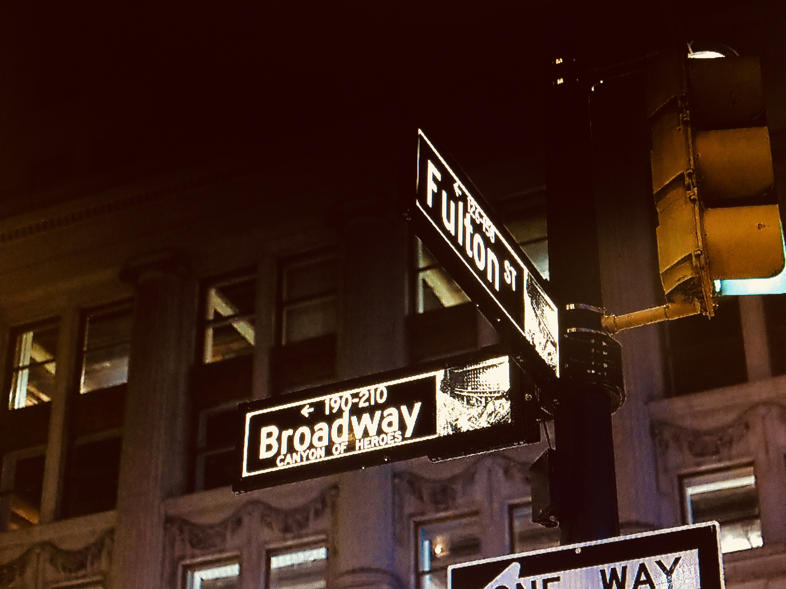
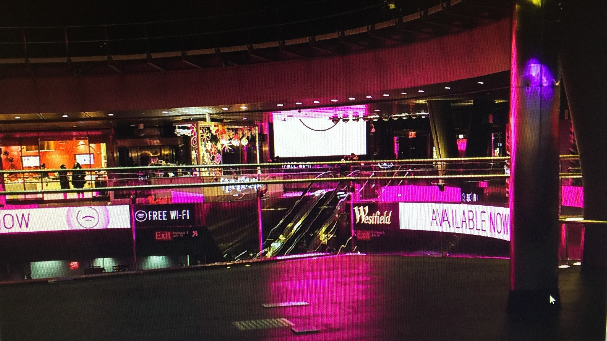

Fulton Center Station - by Joel Singh.
 One of my favorite places to visit and spend some time, is the Fulton Center Station. Fulton Center is located between Fulton St. and Broadway in the heart of lower Manhattan. There are many trains that stop at the Fulton Street Subway Station.
Trains #2, 3, 4, 5, A, C, J, Z, N, R, W. Also there is an underground tunnel that will lead you to the Path train.
-Joel Singh
The Fulton Station Mall
 You can spend all day at the Fulton Center Mall. There are endless stores to visit. You name it they got it. You want it they have it! Everything from sandwiches to diamonds.
The Architecture Design
 The Fulton Center has amazing architecture and artwork thought-out the Center. But the most striking and memorable piece of architecture is the Sky Reflector-Net, found at the ceiling, right in the middle of the building. This is a photograph of the circular glass ceiling. You must go there and see it.
The Fulton Center has amazing architecture and artwork thought-out the Center. But the most striking and memorable piece of architecture is the Sky Reflector-Net, found at the ceiling, right in the middle of the building. This is a photograph of the circular glass ceiling. You must go there and see it.
My New York
"The Newly Renovated Fulton Street Center, is one of my favorite N.Y. places to go to. The first time I went there was six months after it was restored." The original iconic Fulton Center was damaged during 911. This Newly restored Center was opened on November 10, 2014. The building is beautifully built, and the structure is amazing. The Sky Reflector Net is beautiful, especially when the sun shines through it. It is a must see.
"My friends and I use this center as a meet up point. Most of the time we will get together to commute from here. Other times we will get together to browse and hang out at the mall or find places to eat." There so many places to choose from. Although this is a great place, it is also huge with lots of people running to catch trains. At times this place can get flooded with people, so be Alert, Safe, and Enjoy!
- Joel Singh. (photos by J.S.)